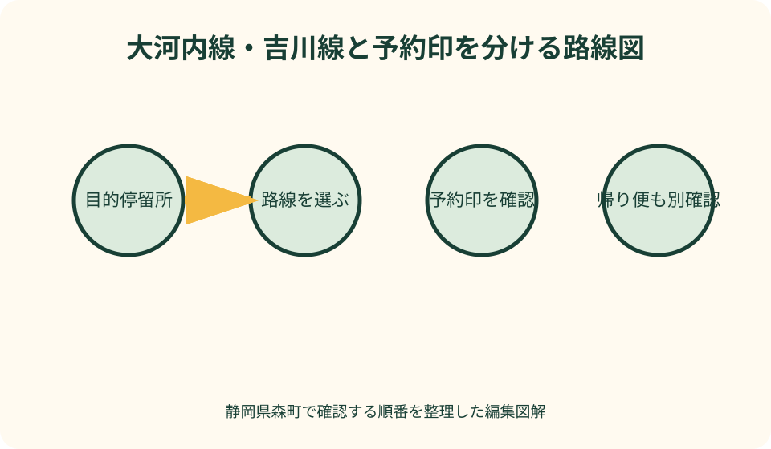
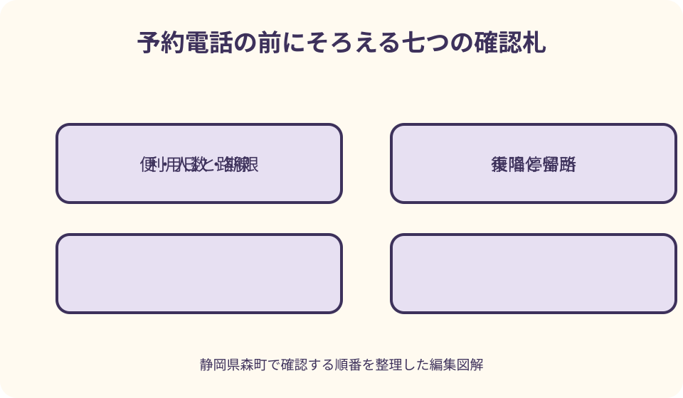

町営バス・予約・生活交通｜最終確認 2026-08-10
静岡県森町の町営バス・予約便利用法｜大河内線・吉川線を乗り違えない確認順
森町営バスには大河内線と吉川線があり、どちらも便によって事前予約が関係します。同じ路線の全便が予約制という意味ではなく、時刻表上の印と注意書きを一便ずつ読む必要があります。運行日、運休日、予約期限、予約先も路線と便で確認します。遠州森駅で乗り換える人やアクティ森へ行く人は、行きだけでなく帰り便まで先に選び、予約内容を一つのメモにまとめてください。

最初に路線名ではなく目的地の停留所を探す
森町公式は町営バスとして大河内線と吉川線を案内しています。名前の似た民間路線や患者バスとまとめず、町公式ページから時刻表へ入ります。目的地名を地図で見ただけで路線を決めず、時刻表または路線図に目的の停留所があるかを確認します。
アクティ森方面へ行く場合は吉川線の経由停留所を見ます。山間部へ向かう場合も、「北へ行くから大河内線」と推測せず、地区名、停留所名、終点を照合します。同じ字名でも停留所が複数ある可能性を考え、施設の正式住所と最寄り停留所を確認します。
遠州森駅で天浜線から乗り換える人は、駅名とバス停名が完全に同じ表記とは限らないため、町営バス時刻表の駅前停留所を探します。鉄道ホームから乗り場までの歩行、道路横断、トイレを含め、短い接続へ無理に合わせません。
通院、買い物、観光では、同じ停留所でも降りてからの移動が違います。建物入口までの距離、坂、帰りの乗り場、荷物を持って歩けるかを調べます。バスが目的地の玄関前まで入るという前提を置きません。
通常便と予約印のある便を一便ずつ分ける
町公式は、両路線とも事前予約が必要な便があると案内しています。これは全便予約制という意味ではありません。時刻表で希望する停留所と便が交わる欄を見て、予約を示す印が付いているか、欄外の説明が何を指すかを読みます。
同じ車両が走る時間帯でも、区間によって予約扱いが変わる可能性があります。始発停留所の印だけを見ず、自分が乗る停留所の時刻欄を確認します。往路に印がなくても復路に印がある場合があるため、往復を別々に判定します。
時刻表を画面保存する場合は、表だけでなく凡例と予約説明も一緒に保存します。印の意味が切れた画像は、後から見た家族が通常便と誤解します。ファイル名や表題にある改定日も入れ、古い時刻表との取り違えを防ぎます。
予約印が見つからない、文字が小さい、PDFを読めない場合は、自己判断で停留所へ行かず、町公式ページの問い合わせ先へ確認します。利用日、路線、乗車停留所、希望する便を伝え、予約の要否だけでなく運行日も一緒に聞きます。
予約期限は発車時刻だけでなく区分と営業日で読む
予約期限は、すべての便で同じとは限りません。町公式時刻表の予約手順には、便の時間帯に応じた申込期限が掲載されています。本文へ数字を固定せず、利用する便の区分を見つけ、その区分の期限を最新版で確認します。
前日までの連絡が必要な便を、当日になって予約できるとは考えません。反対に当日受付可能な区分でも、発車直前に連絡すればよいとは限りません。電話する時刻を予定表へ書き、期限より十分前に連絡します。
休日運行の便でも、予約受付先が同じ時間帯に電話対応するとは限りません。運行日と予約窓口の受付日を分けて確認します。連休、年末年始、施設休業日が絡む場合は、前の営業日に確認します。
予約後に列車接続や予定を変える場合、勝手に別便へ乗り換えません。変更または取消の連絡先と期限を公式手順で見ます。無断で乗らないと、運行側が利用者を待つ可能性があり、ほかの利用者にも影響します。
電話予約で伝える内容を紙にしてからかける
電話前に、利用日、路線名、乗車停留所、降車停留所、希望便、人数、代表者名、連絡先を書きます。「駅からアクティへ」のような省略ではなく、時刻表に載る正式な停留所名を使います。往復なら帰りを別行にします。
子ども、高齢者、車いす、大きな荷物がある場合は、必要な支援と車内へ持ち込む物を伝えます。対応可能かを当日運転者へ初めて相談するのではなく、予約窓口に確認します。介助者の同乗が必要かも家族で決めます。
予約受付で回答された内容は、日時、路線、便、区間、人数、集合場所として復唱します。担当者の個人名を残すことより、何を予約できたかを正確に共有することが大切です。家族の代表だけが知る状態にしません。
電話がつながらない場合、予約成立とは考えません。留守番電話やFAXなど別手段が公式に案内されている場合だけ、その手順に従います。非公式のSNSへ個人情報を送らず、受付完了を確認できる方法を選びます。

運行日と運休日を路線ごとに確認する
大河内線と吉川線では運行日の考え方が同じとは限りません。町公式の一覧で、曜日、祝日、特定期間の運休を路線別に見ます。観光施設が営業している日でも町営バスが走るとは限らず、バスが走っても施設が休みの場合があります。
カレンダー上の平日・休日だけで判断せず、利用日そのものを時刻表の条件へ当てはめます。振替休日、学校休業、盆、年末年始などは通常曜日と異なる扱いの可能性があります。最新版の注記を読みます。
雨天だから運休、晴天だから運行という単純な規則ではありません。町公式時刻表は、台風、雨量規制、路肩決壊、土砂崩れ、凍結、積雪など道路条件による運休可能性を案内しています。当日は町と運行者の情報を確認します。
行きの便が動いても、天候悪化で帰りが変わることがあります。山間部へ行く日は、現地滞在中も情報を受け取れる通信手段、運行問い合わせ、迎えの代案を持ちます。警報や通行止めが予想される日は利用日を変えます。
遠州森駅で天浜線と接続させる
遠州森駅へ列車で来る場合、天浜線公式と町営バス公式を別に開きます。町営バス時刻表に接続参考が載っていても、鉄道の最新改正や運休は天浜線公式で確認します。片方の表だけで接続を確定しません。
列車到着からバス出発までには、降車、精算、駅出口、停留所確認の時間が必要です。初回利用や荷物がある日は余裕を増やします。列車が少し遅れてもバスが必ず待つという説明がなければ、接続保証を前提にしません。
帰りは、町営バスの駅到着後に乗れる天浜線を二候補選びます。一本目は通常の本命、二本目は遅れや乗降を吸収する候補です。駅で待つ時間を減らすために、山間部からの帰り便を危険なほど遅くしません。
乗り遅れた場合、次のバスが予約便ならその場で乗れるとは限りません。予約期限を過ぎていないか、別便へ変更できるかを運行窓口へ確認します。駅前から目的地まで歩き始める前に距離と道路を見ます。
アクティ森へ行く日は施設受付と帰りを先に合わせる
アクティ森方面は吉川線の停留所と便を確認します。施設名と停留所名が完全一致すると思わず、町公式時刻表とアクティ森公式の交通案内を照合します。降車後に受付まで歩く時間も加えます。
陶芸やアウトドアなど予約した体験がある場合、バス到着が受付時刻に十分間に合うかを施設へ確認します。交通遅延を見込まず直前到着へすると、体験できない可能性があります。前の便、タクシー、体験時刻の変更を比較します。
帰り便は体験終了時刻だけで選びません。片付け、作品手続き、着替え、買い物、停留所までの移動を含めます。スタッフへバスを待たせてもらえると期待せず、余裕を持って体験を切り上げます。
施設休業や屋外体験中止でも、予約したバスが自動取消になるとは限りません。施設とバス予約先の両方へ連絡します。駅へ戻る、町なかへ行くなど行先を変える場合も、乗降区間の変更を確認します。
大河内線と山間部では帰りの余白を大きくする
大河内線を使う山間部の移動では、停留所から目的の集落や施設までの距離を確認します。同じ地区名でも道路沿いに広がりがあり、地図上の中心点が目的地ではありません。訪問先へ最寄り停留所と徒歩経路を尋ねます。
山間部では携帯電話の通信、夜間照明、雨や凍結の影響が市街地と同じとは限りません。帰りの停留所を到着時に確認し、暗くなる前の便を基本にします。道路端でバスを待つ場合は車から見える位置と安全な待機場所を選びます。
親族宅や知人宅へ行く場合、迎えがあるときも停留所名と到着予定を共有します。予定より早く道路へ出て待たせず、到着連絡の方法を決めます。帰りの送迎が変わったら予約便の取消も忘れません。
山間部で乗れなくなった場合、徒歩で次の停留所を目指すことを第一案にしません。運行窓口、訪問先、タクシー、家族の迎えの順で相談します。日没や悪天候では移動を始めず、安全な建物で待ちます。
対象者と運賃は最新版の表で確認する
森町公式は町営バスをどなたでも利用できると案内しています。住民専用と決めつけず、観光や訪問にも使えます。ただし、定期券、回数券、割引の条件は利用者区分と販売場所を最新版で確認します。
運賃は記事へ数字を固定せず、路線、区間、大人・子どもなどの区分を町公式で見ます。現金の用意、車内での両替可否、券の販売場所を乗車前に確認し、高額紙幣だけを持って乗りません。
定期券や回数券を初めて買う人は、販売場所へ行けばすぐ全種類を買えると考えず、対象路線、必要書類、販売時間を町公式で確認します。一回の観光利用なら、券を買うための移動と割引を比較し、通常運賃の方が簡単な場合もあります。
子どもだけ、高齢者だけで利用する場合、乗降方法を家族と練習します。停留所名を書いた紙、緊急連絡先、帰りの便を持たせます。運転者に継続的な見守りを任せる前提を置きません。
観光客が利用する場合も、生活交通であることを忘れません。通院、通学、買い物の利用者が同乗します。大きな荷物で席や通路を塞がず、撮影や会話を控え、定員や乗降に配慮します。

乗れないときの代案を路線別に持つ
予約期限を過ぎた場合、まず通常便または次の予約可能便を時刻表で探します。目的地の滞在時間と帰り便が成立するかを再計算します。行けても帰れない組み合わせなら、その日の利用を中止します。
タクシーを使う場合、町内で常時待機していると期待せず、事前に配車可否と概算を尋ねます。駅、アクティ森、山間部のどこから乗るかを正式名称と住所で伝えます。片道だけタクシーにする場合も帰路を確保します。
家族の送迎へ切り替える場合、バス停や道路上で急に乗降しません。施設の駐車場や安全な待ち合わせ場所を決めます。バス予約済みなら取消連絡を行い、運行側が迎えに行く状況を残しません。
目的日の変更は失敗ではありません。悪天候、予約満了、接続不足なら、公式時刻表を使える日に改めます。町なか徒歩や天浜線沿線の別目的へ切り替える場合も、無理に山間部へ向かうより安全です。
良い点
町営バスは、自家用車がなくても遠州森駅、町内施設、山間部をつなぐ選択肢です。森町の公共交通計画でも、鉄道、路線バス、町営バス、タクシーが役割を分担する姿が整理されています。
予約便を組み合わせることで、需要の少ない時間や区間にも移動手段を用意する考え方があります。利用者が期限と区間を正確に伝えることが、必要な運行を無駄なく使うことにつながります。
町公式に時刻表、路線図、運賃、予約手順、問い合わせがまとまっているため、非公式な経路記事だけに頼らず準備できます。改定日を確認し、毎回公式へ戻る習慣を作れます。
注文したい点
初めての利用者には、時刻表の予約印、区間、期限の関係が難しく見えます。日付、乗降停留所、希望時刻を入れると、予約要否、期限、連絡先、帰り候補を一画面で示す公式検索があると利用しやすくなります。
天浜線との接続は時刻表に参考表示があっても、改正時期が異なる可能性があります。鉄道とバス双方の最新版を照合した日を明記し、接続保証の有無も分かる案内が必要です。
運休情報は道路条件で急に変わります。町トップ、バスページ、運行者から同じ情報へ進めるようにし、予約者へ変更を伝える方法も明示されると、山間部で待ち続ける不安を減らせます。
代案・結論
利用手順は、目的停留所、路線、運行日、希望便、予約印、予約期限、予約先の順です。この七点を最新版で確認し、電話前に紙へ書きます。往復は別便として同じ手順を繰り返します。
遠州森駅接続では天浜線公式、アクティ森訪問では施設公式も追加します。町営バス時刻表だけで列車や施設営業を確定しません。接続と受付に余裕がなければ、前の便または別日を選びます。
乗れない場合は、次便、タクシー、家族送迎、目的日変更を比較します。山間部へ歩き始める、予約なしで停留所へ行く、最終の帰路だけに賭ける予定を避けます。
家族メモには予約日、利用日、路線、往復便、停留所、人数、変更連絡先を残します。利用後に分かりにくかった点も記録し、次回は公式改定を確認してから更新します。
大石の視点
私は町営バスを案内するとき、時刻だけを抜き出しません。路線、運行日、予約印、期限、帰りが一組だからです。一つ欠けると、停留所にいても乗れない可能性があります。
予約便は不便な例外ではなく、必要な移動を必要な便へ伝える仕組みとして理解すると使いやすくなります。正確な予約と取消は、運行側だけでなく次の利用者にも関係します。
森町の山間部へ車なしで行く日は、行ける距離より戻れる余白を見ます。アクティ森で体験を一つ、親族宅で用事を一つというように目的を絞り、明るいうちの帰路を守ることが実用的です。
公式情報・確認先
掲載内容は次の一次情報を基礎に整理しました。営業、料金、催し、交通は変わるため、出発前または手続き前にリンク先で最新情報を確認してください。
- 森町営バスのご案内（静岡県森町、2026-08-10確認）
- 森町地域公共交通法定計画（静岡県森町、2026-08-10確認）
- 遠州森駅 路線と駅情報（天竜浜名湖鉄道、2026-08-10確認）
- 森町体験の里 アクティ森（静岡県森町、2026-08-10確認）